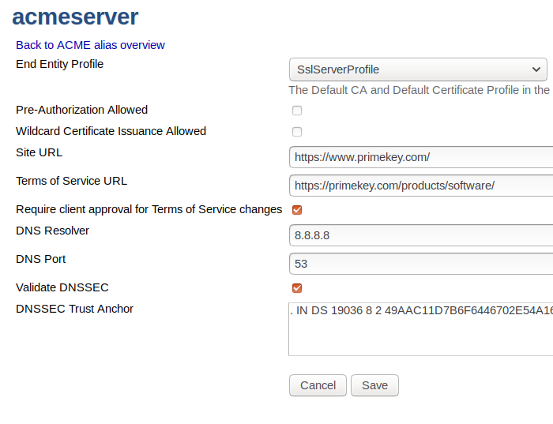

Using CertBot to Issue Certificates with ACME to an Apache Web Server
Introduction
This integration document shows how to use the popular ACME agent CertBot to automatically create and renew TLS certificates for an Apache web server. The same setup can easily be used for other web servers that CertBot has support for, for example NGINX. With a TLS certificate, the web server can be reached using the HTTPS protocol, and all traffic to and from the web server is encrypted.
The following describes how to issue private TLS certificates for usage in your organization.
Prerequisites
Issuing web host certificates using ACME makes use of DNS for authorizing issuance of certificates for a specific domain. Therefore it is important that both the web host and the CA have proper FQDNs and that these are in the DNS. The CA needs to be able to reach the web server, looking up its FQDN in DNS.
The following prerequisites are required to complete the issuance:
EJBCA
EJBCA Enterprise (with ACME support) deployed on an Ubuntu server, configured with:
A CA that will issue web server certificates
A certificate profile in EJBCA for the web server certificates
An end entity profile in EJBCA for the web server certificates that is configured to use the web server certificate profile
Apache web server
A server/VM installed with Ubuntu 19.04 (as used in this guide, other operating systems should work the same/similarly)
DNS host records
A host record for the CA server, used by the web server to contact the CA (in this guide ejbca.example.com)
A host record for the web server, used by the CA to contact the web server for ACME http-01 authorization (in this guide tgacme.com and www.tgacme.com)
Issue Web Server TLS Certificate over ACME with CertBot
To complete issuance of a web server certificate, follow the steps outlined in the sections below.
Step 1 - Trusted CA Certificate Configuration
In order to contact the CA server over https, the CA certificate that signs your servers (EJBCA and Apache) TLS certificates needs to be installed as trusted in your systems, both the EJBCA host and the Web host. If not, CertBot will not be able to talk to the CA.
In this guide, the Management CA (a Root CA) is used and the Management CA certificate has been downloaded as /tmp/ManagementCA.cacert.pem.
Run the following on both servers:
sudo mkdir /usr/share/ca-certificates/extra/sudo cp /tmp/ManagementCA.cacert.pem /usr/share/ca-certificates/extra/ManagementCA.cacert.crtecho 'extra/ManagementCA.cacert.crt' | sudo tee -a /etc/ca-certificates.confsudo update-ca-certificatesNext, test that you can access the CA server from both the CA itself and the web server. Example URL: https://ejbca.example.com:8442/
Step 2 - Configure EJBCA on the CA Host
Perform the following steps to configure EJBCA on the CA host:
To configure the Management CA to allow the same subject DN on multiple end entities:
In the EJBCA Admin UI, click Certificate Authorities>Management CA>Edit and set the following:
Enforce unique public keys = unchecked.
Enforce unique DN = unchecked.
To create a Server Certificate Profile, SslServerProfile :
To clone the SERVER certificate profile, click Certificate Profiles>SERVER>Clone and set the following:
Extended Key Usage = Server Authentication.
Available CA: Any CA.
To create a Server End Entity Profile, SslServerProfile:
In the EJBCA Admin UI, click End Entity Profiles>Add profile and set the following:
End Entity E-mail: Use, Modifiable.
Subject DN Attributes: Only CN, Required and Modifiable.
Subject Alternative Name: two DNSName.
Default/Available Certificate Profile: SslServerProfile.
Default/Available CA: Management CA.
Enable the ACME protocol under System Configuration>Protocol Configuration.
Add an ACME alias in EJBCA:
In the EJBCA Admin UI, click ACME Configuration>Add and set the following:
End Entity Profile: SslServerProfile.
Site URL: https://www.primekey.com/
Terms of Service URL: https://primekey.com/products/software/
DNS Resolver: 8.8.8.8.
Set the ACME alias as Default ACME configuration in the ACME Configuration Overview (EJBCA Admin UI>ACME Configuration).
The following displays an example ACME alias configuration:

Screenshot of example ACME configuration
Step 3 - Install CertBot on the Apache Web Server Host
On the Web host, install CertBot using the following command. Note that you may need to run sudo apt update on a fresh installation.
sudo apt install python3-certbot-apacheThe above command installs the Apache2 web server automatically.
Step 4 - Issue Web Server Certificate
First, to test that https is not available, test the following in a web browser:
http://tgacme.com - Should show the Apache default web page
https://tgacme.com - Should show an error that the browser cannot connect
Next, run certbot to install the certificate from the EJBCA server:
sudo certbot --server https://ejbca.example.com:8442/ejbca/acme/directory -d tgacme.com --apache --agree-tos --email admin@example.com --no-eff-email --noninteractiveThen test with the web browser again:
https://tgacme.com - Should now connect and show the Apache default web page.
Additionally, you can go to the certificate view page of your web browser and inspect the web server certificate (that the issuer is the private Management CA).
Step 5 - Configure CertBot for Automatic Monitoring of Expiry
You can now configure CertBot for automatic monitoring of expiry. For information on configuring CertBot, refer to the CertBot documentation.
Additional Notes
Roles and Responsibilities
There are at least three distinct roles used in this guide and more roles may be relevant.
CA administrator: performing the configuration of EJBCA. This role can further be divided for CA role separation, for example:
CA policy administrator, configuring certificate- and end entity profiles ensuring that properly formatted certificates are issued.
CA protocol administrator, configuring ACME aliases.
Web server administrator, performing configuration of the Apache server and CertBot on the web host.
DNS administrator, adding records to the DNS enabling ACME authorization.
In addition, it is recommended to monitor all web hosts for expiring certificates. There is a plethora of tools for this, and it is probably included as part of your organization server monitoring solution.
Cleanup/Reset Web Server to Run Again
A simple script can be run on the web host to re-install Apache and CertBot, making it straightforward to run the test as many times as you want, the same fresh installation every time.
The steps are outlined below to describe the process although the script can be run during the initial setup as well.
/home/user/certbot-reinstall.shThe script does the following:
#!/bin/bashsudo apt-get -yq remove --purge python3-certbot-apachesudo apt-get -yq remove --purge apache2sudo rm -rf /etc/letsencryptsudo rm -rf /etc/apache2sudo apt-get -yq --ignore-missing install python3-certbot-apacheTest with browser:
http://tgacme.com - Shows the Apache default web page
https://tgacme.com - Shows an error that the browser cannot connect.
sudo certbot --server https://ejbca.example.com:8442/ejbca/acme/directory -d tgacme.com --apache --agree-tos --email admin@example.com --no-eff-email --noninteractive
Test with browser:
https://tgacme.com - Connects and shows the Apache default web page.
Show the web server certificate in the browser (and verify that it comes from the private Management CA)
CertBot on a Fresh Ubuntu 18.04 or Lower Host
Without updating the Ubuntu repos, the client that will be installed is 0.23. This is older and not supported by EJBCA version > 7.3.0.
To install a newer CertBot version, use the following commands:
sudo apt-get -y updatesudo apt-get -y install software-properties-commonsudo add-apt-repository -y universesudo add-apt-repository -y ppa:certbot/certbotsudo apt-get -y updatesudo apt-get -y install certbot python3-certbot-apache